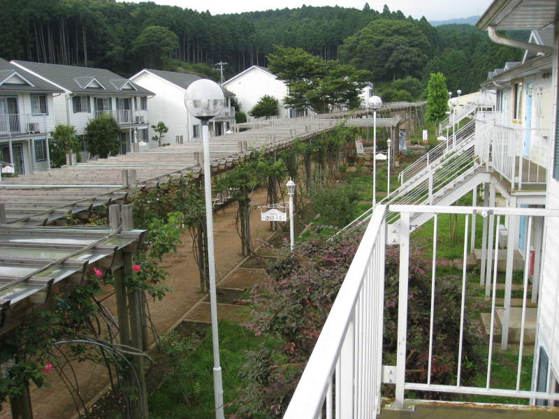
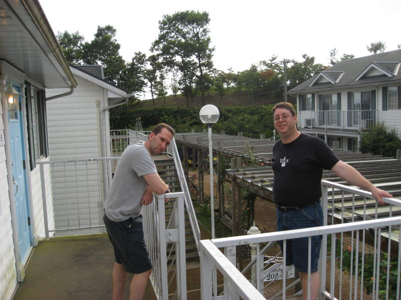
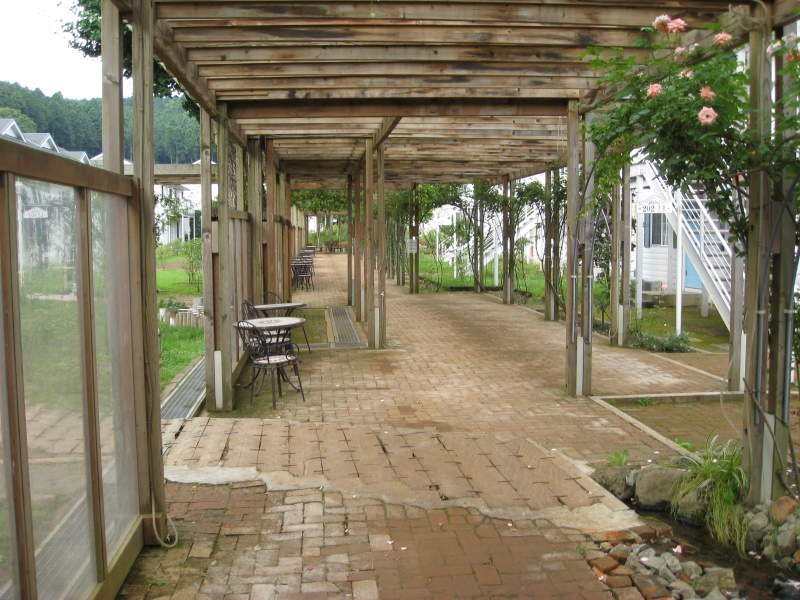
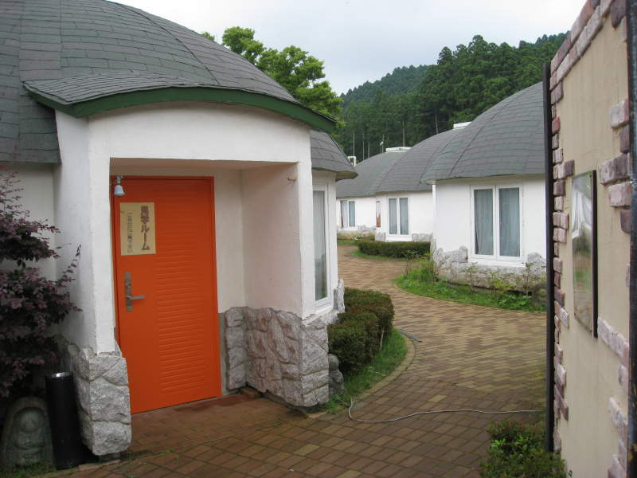
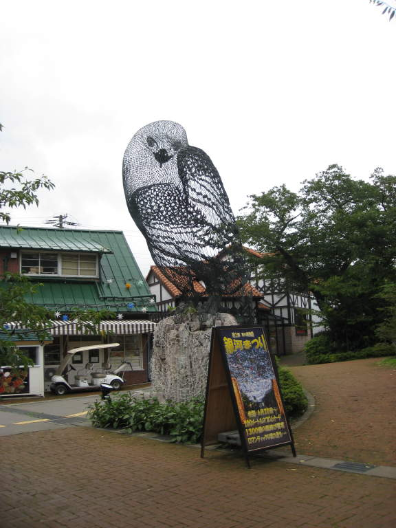

Gotemba Kogen Resort
After
the Mount Fuji fiasco/success, I found my friends sleeping away back in
our hotel at the Gotemba Kogen Resort. Sometimes it's also called
the Gotemba Kogen Brewery, named after a brewery in a restaurant at the
resort. I figured it was a nice place to unwind after a very
traumatizing mountain climb.

Here's Paul and Miller at the resort.

The
resort didn't really feel like your average resort. It was a bit
rustic for that. It was pretty big and spread out, with some
outdoor dining, a park, tennis courts, a beach volleyball court, a
soccer field, two restaurants, one of which included a brewery, a gift
shop, and other things.

Those other things included these cool-looking bungalows which we didn't stay in.

Most sculptures at the resort were tacky and draped with Christmas lights. I did like this one though.
Back